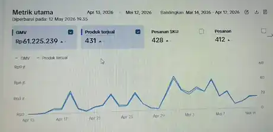
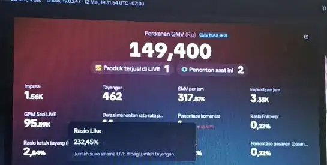
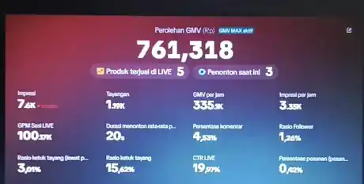
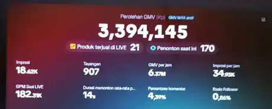
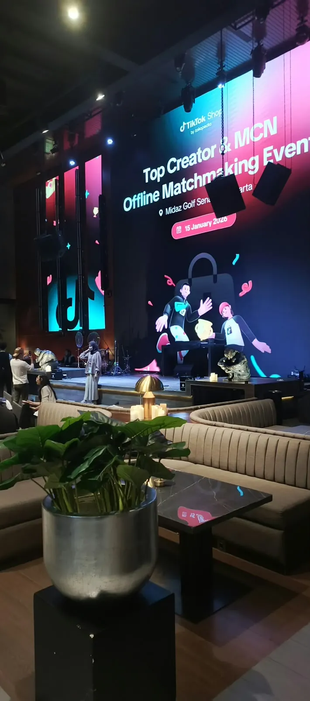

PORTOFOLIO PRIBADI · 2025—2026
Mengembangkan bisnis melalui marketplace, konten, dan teknologi.
Halo, saya Derian Alfriansyah. Saya berpengalaman dalam pengelolaan toko TikTok Shop, affiliate partnership, TikTok Ads, strategi konten, dan pembuatan UGC berbantuan AI. Saya juga mengembangkan proyek sistem kasir yang terhubung dengan Google Sheets.
Marketplace · Affiliate · Content · Business Systems
PROFILE / 001● DIGITAL COMMERCE
Derian
Alfriansyah
E-Commerce & Digital Operations
2025 — 2026
TIKTOK ADS & SHOP
✳ DIGITAL WORKFLOW
TOOLS & PLATFORM DIGITAL
Platform yang mendukung alur kerja saya.
Aplikasi dan platform yang saya gunakan untuk mengelola marketplace, membuat konten, mendukung operasional, dan mengembangkan sistem bisnis.
Ikon pada bagian ini merupakan ilustrasi identifikasi platform dan aplikasi, bukan pernyataan kemitraan atau dukungan resmi.
01 / TENTANG SAYA
Perjalanan yang membentuk cara saya bekerja.
Saya, Derian Alfriansyah, memiliki pengalaman dalam pengelolaan toko online, pengembangan aktivitas affiliate, strategi konten, dan operasional bisnis digital. Saya pernah membantu mengelola beberapa toko di TikTok Shop, menangani kebutuhan konten dan iklan, serta membangun kolaborasi dengan brand.
Sebelum masuk lebih jauh ke dunia bisnis, saya menjalani kehidupan di Pondok Pesantren Al-Bahjah selama kurang lebih sembilan tahun dan pernah mengemban amanah sebagai murāqib atau pengasuh. Pengalaman tersebut menjadi bagian penting dari perjalanan pribadi dan tanggung jawab saya.
Di sisi teknologi, saya mengembangkan proyek KasirKu, sebuah sistem kasir berbasis web yang dirancang agar dapat digunakan melalui HP maupun laptop dan terhubung dengan data Google Sheets.
2025Agency & affiliate
2026Multi-store operations
01KasirKu project
02 / KEAHLIAN
Bidang yang saya kerjakan dan kembangkan.
Keterampilan berikut disusun dari pengalaman praktik, proyek, dan pembelajaran. Rincian tiap kemampuan dapat diperkuat dengan contoh hasil kerja.
TikTok Shop Management
Pengelolaan toko, produk, listing, operasional, live commerce, dan pemantauan performa.
STORE OPERATIONSPRODUCT LISTING
TikTok Ads & GMV Max
Pemantauan iklan, evaluasi metrik, analisis performa kampanye, dan pertimbangan optimasi.
ADS MONITORINGPERFORMANCE
Affiliate & Agency
Pengelolaan aktivitas agency affiliate dan koordinasi kolaborasi dengan brand.
PARTNERSHIPBRAND COLLAB
Content Strategy
Pengembangan ide, sudut komunikasi, brief kreatif, hook, CTA, dan perencanaan konten.
IDEATIONCREATIVE BRIEF
AI-assisted UGC
Pembuatan konsep dan materi UGC dengan dukungan AI untuk kebutuhan konten promosi.
UGCAI WORKFLOW
Marketplace SEO
Penyusunan judul, deskripsi, kata kunci, varian, dan informasi produk untuk listing.
SEO WRITINGPRODUCT COPY
Business Systems
Google Sheets, perhitungan HPP dan margin, alur administrasi, serta pengembangan sistem kasir.
GOOGLE SHEETSAPPS SCRIPT
Web Development Dasar
HTML, CSS, dan JavaScript untuk membangun website serta prototipe aplikasi sederhana.
HTML / CSSJAVASCRIPT
03 / PROYEK & PENGALAMAN PILIHAN
Pengalaman nyata di dunia digital.
Portofolio ini merangkum toko yang pernah dikelola, kolaborasi affiliate, pengelolaan iklan dan konten, serta proyek sistem yang dikembangkan.
TIKTOK SHOP / 2025
A&YFASHION
COMMERCEA&Y FASHIONSTYLE · KORINA STYLE
COMMERCEA&Y FASHIONSTYLE · KORINA STYLE
Pengelolaan Toko TikTok Shop — 2025
Pengalaman membantu pengelolaan toko A&Y FashionStyle dan Korina Style, termasuk aktivitas operasional toko, produk, konten, live commerce, dan pemantauan performa.
PENGALAMAN PRAKTIK · 2025AGENCY & AFFILIATE PARTNERSHIP / 2025
PARTNERSHIPBRAND
COLLABORATION
COLLABORATION
ALKAHFALAMME+ OTHERS
Masjid Affiliate Alkahfi
Pengalaman sebagai manager agency di Masjid Affiliate Alkahfi, Bunut, Bandung, serta menjalankan peran sebagai TikTok Affiliate Partner (TAP) dan mendukung kolaborasi dengan brand.
BRAND COLLABORATION · 2025MULTI-STORE OPERATIONS / 2026
BENIH BAIK GROUPBENIH FAST GROUPPETANI KOTA STOREKELAPA GADING 3 · KELAPA GADING 2
Pengelolaan Multi-Store — 2026
Pengalaman membantu pengelolaan beberapa toko TikTok Shop pada kategori kebutuhan tanaman dan produk terkait, mencakup listing, informasi produk, operasional, dan aktivitas penjualan.
5 TOKO · PENGALAMAN 2026TIKTOK ADS / CAMPAIGN ANALYSIS
CAMPAIGN PERFORMANCELIVE DATA VIEW
MONITORANALYZEOPTIMIZE
TikTok Ads & Performance Monitoring
Pengalaman memantau aktivitas iklan TikTok, termasuk GMV Max, membaca metrik performa, mengevaluasi kampanye, dan mempertimbangkan langkah optimasi toko.
ANALISIS & OPERASIONAL IKLANCONTENT STRATEGY / AI-ASSISTED UGC
UGC VIDEOHOOK
STORY
CTAAI-ASSISTED CONTENT
STORY
CTAAI-ASSISTED CONTENT
Strategi Konten & UGC Berbantuan AI
Pengembangan ide konten, sudut komunikasi produk, hook, CTA, dan pembuatan konsep atau materi UGC dengan dukungan AI untuk kebutuhan pemasaran.
CONTENT DEVELOPMENTKASIRKU / INTERACTIVE DEMO
KASIRKUWEB POS
TOTAL PEMBAYARANRp —
QRISNON-QRIS
GOOGLE SHEETS SYNCKasirKu — Sistem Kasir Terintegrasi
Pengembangan sistem kasir berbasis web untuk HP dan laptop. Versi kerja menggunakan Google Sheets sebagai sumber katalog HPP, stok, dan catatan transaksi; demo publik memakai data simulasi terpisah.
Coba Demo KasirKu ↗Demo publik menggunakan data simulasi lokal; spreadsheet asli tidak diakses.PROYEK PENGEMBANGANCatatan transparansi: kartu proyek menjelaskan ruang lingkup pengalaman. Angka kinerja yang terdokumentasi ditampilkan terpisah pada bagian Studi Kasus & Bukti Kerja sebagai snapshot dashboard, bukan klaim hasil yang disebabkan satu individu. Informasi internal dan identitas akun tetap disamarkan.
04 / PERJALANAN & PENGALAMAN
Dari pengasuhan, menuju dunia bisnis digital.
Perjalanan ini memperlihatkan perpindahan pengalaman dari lingkungan pesantren ke agency, affiliate, pengelolaan toko, dan pengembangan sistem bisnis.
Pondok Pesantren Al-Bahjah
Menjalani kehidupan mondok kurang lebih sembilan tahun dan pernah mengemban amanah sebagai murāqib atau pengasuh di Pondok Pesantren Al-Bahjah, yang diasuh oleh Abuya Yahya.
Pengalaman pembinaan dan pendampingan santriMasjid Affiliate Alkahfi — Bunut, Bandung
Menjadi manager agency serta menjalankan peran sebagai TikTok Affiliate Partner (TAP). Pengalaman kolaborasi mencakup brand seperti ALKAHF, ALAMME, dan perusahaan lainnya.
Agency management · Affiliate partnership · Brand collaborationA&Y FashionStyle & Korina Style
Membantu pengelolaan toko dan aktivitas e-commerce, termasuk pemantauan live dan analitik toko.
Store operations · Live commerce · AnalyticsPengelolaan Lima Toko
Benih Baik Group, Benih Fast Group, Petani Kota Store, Kelapa Gading 3, dan Kelapa Gading 2.
Marketplace operations · TikTok Ads · Product listing · ContentKasirKu
Mengembangkan sistem kasir web untuk HP dan laptop dengan integrasi pencatatan data ke Google Sheets dan dukungan pencatatan pembayaran.
Web workflow · Google Sheets · Payment recordingUniversitas Insan Cita Indonesia
Mahasiswa UICI Batch 11, Program Studi Bisnis Digital.
Pendidikan tinggi05 / ANALITIK & PENCAPAIAN
Kinerja dirangkum dalam angka dan grafik.
Ringkasan metrik dari dokumentasi Seller Center dan TikTok LIVE yang saya bagikan. Dashboard mentah, logo toko, dan ID akun tidak ditampilkan.
SELLER CENTER · A&Y FASHIONSTYLE
01Ringkasan performa toko
13 April – 12 Mei 2026
LINGKUP PEKERJAAN
Lingkup pengalaman: membantu operasional toko A&Y FashionStyle dan Korina Style, menangani produk dan konten, mendukung live commerce, serta memantau performa toko.
GMVRp61.225.239Nilai yang tampil pada dashboard
Produk terjual431
Pesanan SKU428
Pesanan412
Volume aktivitas toko
Angka ini mengikuti nilai yang tampil pada dashboard untuk periode tersebut. Angka menggambarkan snapshot performa toko; angka ini bukan klaim bahwa seluruh hasil disebabkan oleh kontribusi satu orang.
SELLER CENTER · BENIH BAIK GROUP
02Ringkasan performa toko
8 Oktober – 6 November 2026
LINGKUP PEKERJAAN
Lingkup pengalaman: mendukung listing, penataan informasi produk, operasional beberapa toko, dan aktivitas penjualan pada kategori kebutuhan tanaman.
GMV±Rp2 jutaAngka dibulatkan seperti tampilan dashboard
Produk terjual82
Pesanan SKU39
Pesanan35
Volume aktivitas toko
Angka ini mengikuti nilai yang tampil pada dashboard untuk periode tersebut. Angka menggambarkan snapshot performa toko; angka ini bukan klaim bahwa seluruh hasil disebabkan oleh kontribusi satu orang.
TIKTOK LIVE · DOKUMENTASI METRIK
03GMV pada tiga snapshot LIVE
Nilai yang terlihat pada tiga dokumentasi dashboard
Snapshot 01Produk terjual di LIVE: 1
Rp149.400Snapshot 02Produk terjual di LIVE: 5
Rp761.318Snapshot 03Produk terjual di LIVE: 21
Rp3.394.145Catatan: angka ini adalah snapshot yang terlihat pada dokumentasi, bukan total bulanan. Snapshot dapat berasal dari waktu atau sesi yang berbeda dan tidak dimaksudkan sebagai perbandingan performa yang setara.
Sumber: tangkapan layar Seller Center dan TikTok LIVE yang diberikan Derian. Periode dan nilai ditulis mengikuti tampilan yang terbaca. Grafik ini merupakan ringkasan visual, bukan audit independen atau jaminan hasil yang sama pada periode lain.
DOKUMENTASI DASHBOARD
Bukti visual dari aktivitas toko & LIVE
Dokumentasi layar Seller Center dan TikTok LIVE yang mendukung snapshot metrik di atas. Bagian identitas, percakapan, serta detail produk yang tidak diperlukan telah dipotong.




Catatan: angka LIVE merupakan snapshot pada sesi yang berbeda, bukan total bulanan dan bukan perbandingan langsung yang setara.

DOKUMENTASI KEGIATAN
Top Creator & MCN Offline Matchmaking Event
Dokumentasi kegiatan TikTok Shop by Tokopedia · 15 Januari 2026 · Midaz Golf Senayan, Jakarta.
06 / KONTAK
Mari terhubung dan berkolaborasi.
Terbuka untuk peluang kerja, kolaborasi affiliate, pengelolaan marketplace, dan proyek digital yang relevan.
Hubungi via WhatsApp ↗
Kirim email ↗
Nomor telepon / WhatsApp0852 8396 6520
Emailderian2467@gmail.com
Kontak ini ditampilkan atas permintaan pemilik portofolio.